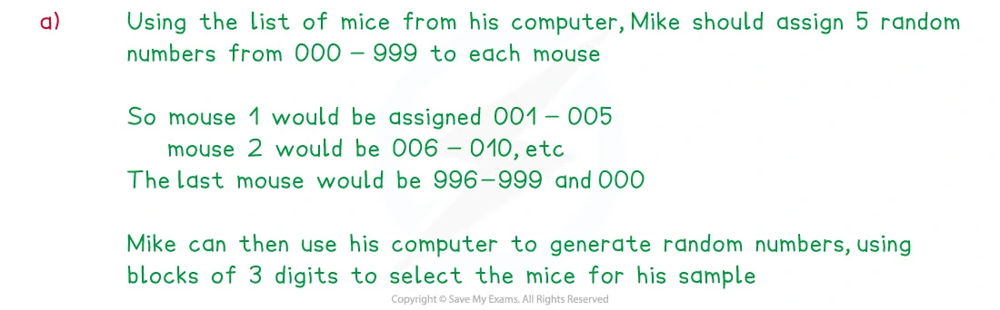
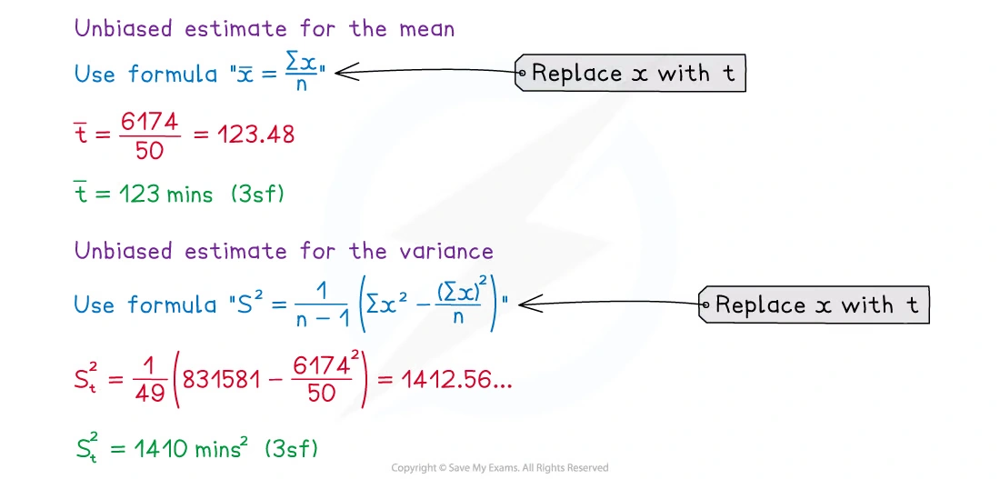
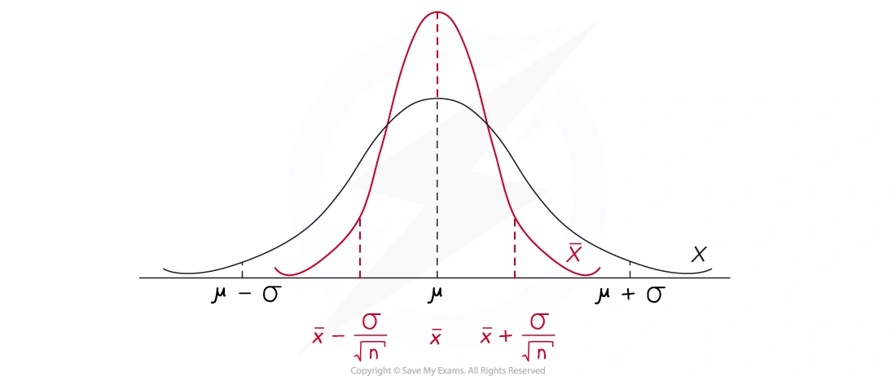
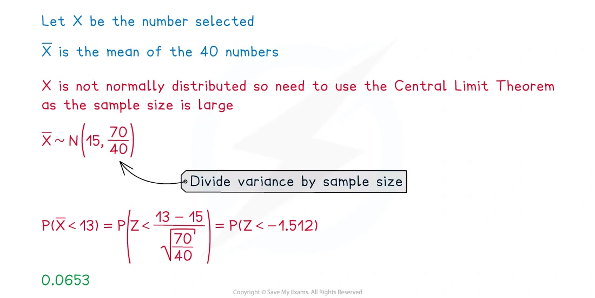
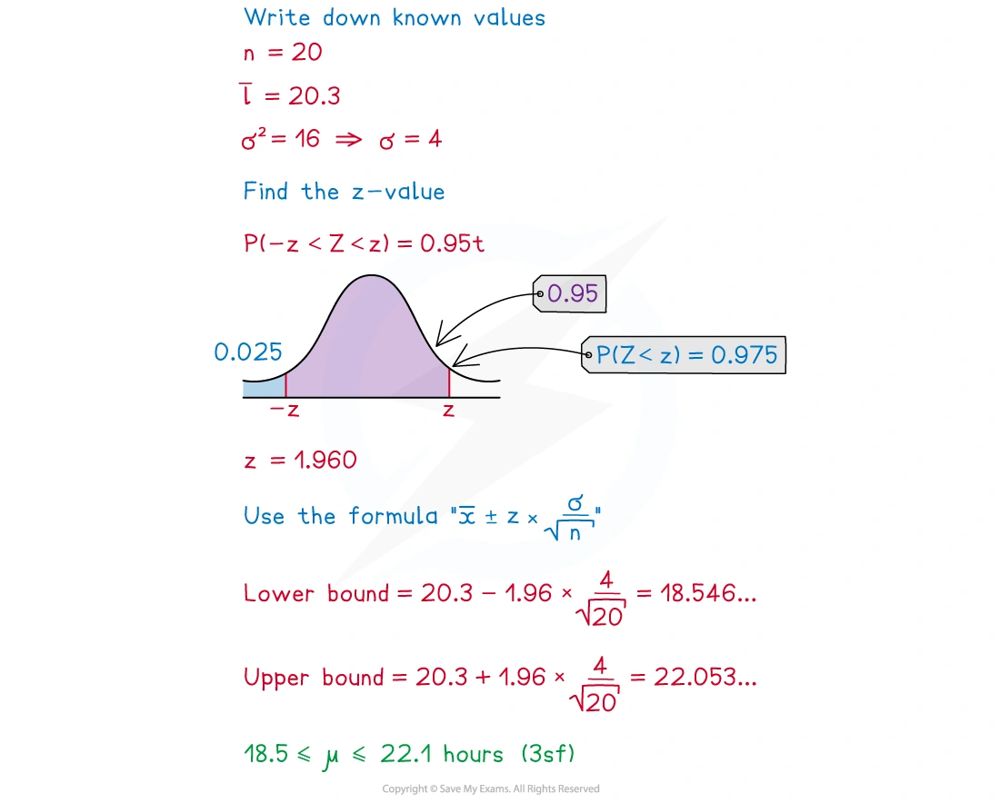
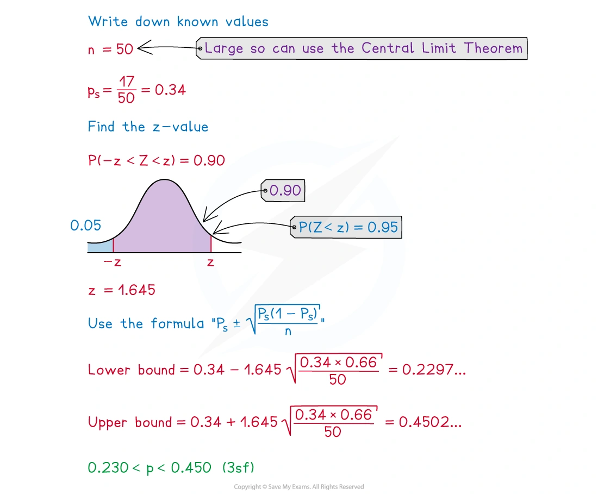

6.4 Sampling and estimation
Samples · unbiased estimates · sample means · confidence intervals
本页依据 9709 Mathematics 2026–2027 syllabus 6.4，覆盖：
- 区分 population、sample、sampling frame、parameter 和 statistic，并理解为什么抽样需要随机性；
- 使用 elementary random-number sampling，识别 sampling bias，以及说明某种抽样方法为什么可能不理想；
- 使用样本均值作为总体均值的估计，并使用无偏样本方差估计总体方差；
- 使用 E(\bar X)=\mu 和 \operatorname{Var}(\bar X)=\sigma^2/n；
- 当总体正态或样本量较大时，使用样本均值的正态分布；
- 在总体方差已知或样本量较大时，求总体均值的 confidence interval；
- 用大样本近似求总体 proportion 的 confidence interval。
真题均来自本地原始 QP，并与对应 mark scheme 核对；题目保持原文，不改写或编造。
Learning objectives
1. Core knowledge
Population, sample and sampling frame
Population 是研究对象的完整集合；从 population 中实际观察到的一部分称为 sample。列出 population 中每个成员的清单称为 sampling frame。总体的未知数值（例如总体均值 \mu 或总体方差 \sigma^2）是 parameter；由样本计算出的数值（例如 \bar X 或 s^2）是 statistic。
抽样的目的是用较小的 sample 推断 population。样本必须尽量有代表性；如果某些成员被系统性排除，或者选择与目标特征有关，就会产生 bias。random sampling 使每个成员有已知且通常相等的机会被选中，从而减少选择偏差。用 calculator 的 random digits 时，可以给每个成员编号，并按位数读取不重复的编号，跳过超出范围的数字。
Census 调查 population 的每个成员，理论上没有 sampling error，但通常耗时、昂贵，并且可能难以取得全部成员的回应。因此实际调查常使用合适的 random sample。
Unbiased estimates
给定随机样本 X_1,X_2,\ldots,X_n，总体均值的无偏估计为
\widehat\mu=\bar X=\frac{\sum X}{n}.
总体方差的无偏估计为
s^2=\frac{1}{n-1}\left(\sum X^2-\frac{(\sum X)^2}{n}\right).
分母是 n-1，不是 n。使用 n 会得到 biased estimate of the population variance。
Distribution of the sample mean
如果总体的 mean 为 \mu，variance 为 \sigma^2，则
E(\bar X)=\mu, \qquad \operatorname{Var}(\bar X)=\frac{\sigma^2}{n}, \qquad \operatorname{sd}(\bar X)=\frac{\sigma}{\sqrt n}.
如果 X 本身是正态分布，则
\bar X\sim N\left(\mu,\frac{\sigma^2}{n}\right).
如果总体分布未知或不是正态分布，但 n 足够大，则由 Central Limit Theorem，\bar X 可以近似看作上述正态分布。注意：CLT 使 sample mean 近似正态，不是使原始 observations 变成正态。
Confidence interval for a population mean
当总体方差已知，或者样本量足够大而可以使用 CLT 时，confidence interval for \mu 为
\bar x\pm z\frac{\sigma}{\sqrt n},
其中 z 由 confidence level 决定，例如
\begin{array}{c|c} \text{confidence level}&z\\ \hline 90\%&1.645\\ 95\%&1.960\\ 98\%&2.326\\ 99\%&2.576 \end{array}
若题目要求的是 98% interval，就使用 z=2.326，而不是把 0.98 直接放进公式。
Confidence interval 的正确解释是：这种构造方法长期重复使用时，约有相应百分比的区间会包含真实的 population mean。它不是说相同比例的 individual observations 会落在该区间内。
Confidence interval for a population proportion
若样本中有 r 个成员具有目标性质，样本比例为
\hat p=\frac rn.
大样本下，population proportion p 的 approximate confidence interval 为
\hat p\pm z\sqrt{\frac{\hat p(1-\hat p)}{n}}.
要使 interval 变窄，可以增大 sample size，或选择较低的 confidence level（较小的 z）。
2. Note worked examples
每个 worked example 单独成卡片；图片均由原始 1. Statistical Sampling.pdf 的对应页面独立提取，不使用页面截图。
Worked example 1 · Choosing a sampling method
Note 先比较 different sampling methods。抽样方法必须结合 population、sampling frame、是否需要随机性和可能的 bias 一起判断：
- simple random sampling：从完整 sampling frame 中随机选择，通常最能减少选择偏差；
- systematic sampling：按固定间隔选择，执行方便，但要留意名单中的周期性；
- stratified sampling：先按重要特征分层，再按各层比例抽样，可保证各层都有代表；
- opportunity sampling：选择最容易接触到的人，方便但很容易产生 bias。
判断一个方法是否 satisfactory 时，要说明它是否能代表目标 population，而不是只写“random”或“not random”。

Worked example 2 · Unbiased estimates from summary data
50 名学生完成任务所需时间 t 的 summary data 为
n=50,\qquad \sum t=6174,\qquad \sum t^2=831581.
总体均值的估计为
\widehat\mu=\bar t=\frac{6174}{50}=123.48\approx\boxed{123\text{ (3 s.f.)}}.
总体方差的无偏估计为
\begin{aligned} s^2 &=\frac1{49}\left(831581-\frac{6174^2}{50}\right)\\ &=139.9\ldots\\ &\approx\boxed{140\text{ (3 s.f.)}}. \end{aligned}
关键是使用 n-1=49，并先减去 $ (t)^2/n$。

Worked example 3 · Distribution of a sample mean
若 X\sim N(30,5^2)，从总体中随机抽取 n=10 个 observations，样本均值的分布为
\bar X\sim N\left(30,\frac{5^2}{10}\right)=\boxed{N(30,2.5)}.
这里第二个参数是 variance，不是 standard deviation；所以样本均值的 standard deviation 是
\sqrt{2.5}=\frac5{\sqrt{10}}.

Worked example 4 · Central Limit Theorem
从整数 1,2,\ldots,29 中随机抽取一个数。总体 mean 和 variance 为
\mu=15,\qquad \sigma^2=70.
对 n=40 个数的样本均值，CLT 给出
\bar X\approx N\left(15,\frac{70}{40}\right).
因此
\begin{aligned} P(\bar X<13) &=P\left(Z<\frac{13-15}{\sqrt{70/40}}\right)\\ &=P(Z<-1.51)\\ &\approx\boxed{0.0653}. \end{aligned}
必须使用 CLT，因为原始 population 是离散的、并不是正态分布，而 sample size 40 足够大，使 sample mean 可以近似正态。

Worked example 5 · Confidence interval for a population mean
电池寿命 L 为正态分布，population variance 为 16。随机抽取 20 部手机，得到 sample mean \bar l=20.3。95% confidence interval 使用 z=1.96：
\begin{aligned} \bar l\pm z\frac{\sigma}{\sqrt n} &=20.3\pm1.96\frac4{\sqrt{20}}\\ &=\boxed{18.5\le\mu\le22.1\quad\text{(3 s.f.)}}. \end{aligned}
这个 interval 是对 population mean \mu 的估计，不是说 95% 的 individual battery lives 落在 interval 内。


Worked example 6 · Confidence interval for a population proportion
从 50 条鱼中随机抽取的样本有 17 条符合目标条件，所以
\hat p=\frac{17}{50}=0.34.
90% confidence interval 使用 z=1.645：
\begin{aligned} \hat p\pm z\sqrt{\frac{\hat p(1-\hat p)}n} &=0.34\pm1.645\sqrt{\frac{0.34(0.66)}{50}}\\ &=\boxed{0.230\le p\le0.450\quad\text{(3 s.f.)}}. \end{aligned}

3. Verified Paper 6 questions
以下题组保持原始题干、全部小问和原始分值；答案按对应 mark scheme 的得分路径展开。
Question 1 · 9709/61/M/J/20 Q1(a–b)
The lengths, X centimetres, of a random sample of 7 leaves from a certain variety of tree are as follows.
5.2\quad 4.8\quad 5.5\quad 6.1\quad 4.8\quad 3.9\quad 4.4
- Calculate unbiased estimates of the population mean and variance of X. [3]
It is now given that the true value of the population variance of X is 0.55, and that X has a normal distribution.
- Find a 95% confidence interval for the population mean of X. [3]
Show detailed mark scheme answer
First calculate the required totals:
\sum x=34.7,\qquad \sum x^2=175.15,\qquad n=7.
\widehat\mu=\bar x=\frac{34.7}{7}=4.9571\ldots\approx\boxed{4.96}.
Using the unbiased variance formula,
s^2=\frac16\left(175.15-\frac{34.7^2}{7}\right)=\boxed{0.523\text{ (3 s.f.)}}.
- Since X is normal, the sample mean is normal. Following the corresponding mark scheme calculation,
\bar X\sim N\left(\mu,\frac{0.523}{7}\right).
With z=1.96,
\bar x\pm z\sqrt{\frac{0.523}{7}} =4.9571\pm1.96\sqrt{\frac{0.523}{7}}.
Therefore the 95% confidence interval is
\boxed{4.42\le\mu\le5.49\quad\text{(3 s.f.)}}.Question 2 · 9709/62/F/M/21 Q1(a–b)
A construction company notes the time, t days, that it takes to build each house of a certain design. The results for a random sample of 60 such houses are summarised as follows.
\sum t=4820\qquad \sum t^2=392050
Calculate a 98% confidence interval for the population mean time. [6]
Explain why it was necessary to use the Central Limit theorem in part (a). [1]
Show detailed mark scheme answer
- Estimate the mean:
\bar t=\frac{4820}{60}=80.333\ldots.
Estimate the population variance without bias:
\begin{aligned} s^2 &=\frac1{59}\left(392050-\frac{4820^2}{60}\right)\\ &=82.0904\ldots. \end{aligned}
For 98% confidence, z=2.326. Hence
\bar t\pm z\sqrt{\frac{s^2}{60}} =\frac{4820}{60}\pm2.326\sqrt{\frac{82.0904}{60}}.
Thus the interval is
\boxed{77.6\le\mu\le83.1\text{ days}\quad\text{(3 s.f.)}}.
- The population distribution of building times is unknown (in particular, it is not given to be normal), so the Central Limit theorem is needed to justify treating \bar t as approximately normal.
Question 3 · 9709/61/M/J/22 Q1(a–b)
The diameters, x millimetres, of a random sample of 200 discs made by a certain machine were recorded. The results are summarised below.
n=200\qquad \sum x=2520\qquad \sum x^2=31852
Calculate a 95% confidence interval for the population mean diameter. [6]
Jean chose 40 random samples and used each sample to calculate a 95% confidence interval for the population mean diameter. How many of these 40 confidence intervals would be expected to include the true value of the population mean diameter? [1]
Show detailed mark scheme answer
- The sample mean is
\bar x=\frac{2520}{200}=12.6.
The unbiased variance estimate is
\begin{aligned} s^2 &=\frac1{199}\left(31852-\frac{2520^2}{200}\right)\\ &=0.5025\ldots. \end{aligned}
For 95% confidence, z=1.96. Therefore
12.6\pm1.96\sqrt{\frac{0.5025}{200}}
gives
\boxed{12.5\le\mu\le12.7\text{ mm}\quad\text{(3 s.f.)}}.
- The expected number is
Question 4 · 9709/62/F/M/23 Q1(a–b)
Anita carried out a survey of 140 randomly selected students at her college. She found that 49 of these students watched a TV programme called Bunch.
- Calculate an approximate 98% confidence interval for the proportion, p, of students at Anita’s college who watch Bunch. [3]
Carlos says that the confidence interval found in (a) is not useful because it is too wide.
- Explain how the confidence interval could be made narrower. [1]
Show detailed mark scheme answer
- The sample proportion is
\hat p=\frac{49}{140}=0.35.
For 98% confidence, z=2.326. Hence
\begin{aligned} \hat p\pm z\sqrt{\frac{\hat p(1-\hat p)}{140}} &=0.35\pm2.326\sqrt{\frac{0.35(0.65)}{140}}\\ &=\boxed{0.256\le p\le0.444\quad\text{(3 s.f.)}}. \end{aligned}
- Use a larger sample, or use a lower confidence level (for example 90%), which gives a smaller value of z.
Question 5 · 9709/62/M/J/24 Q2(a–c)
Henri wants to choose a random sample from the 804 students at his college. He numbers the students from 1 to 804 and then uses random numbers generated by his calculator. The first 20 random digits produced by his calculator are as follows.
5\ 6\ 7\quad1\ 0\ 9\quad8\ 4\ 3\quad1\ 0\ 9\quad6\ 6\ 5\quad0\ 2\ 1\quad7\ 6
Henri’s first two student numbers are 567 and 109.
- Use Henri’s digits to find the numbers of the next two students in the sample. [2]
There were 30 students in Henri’s sample. He asked each of them how much time, X hours, they spent on social media each week, on average. He summarised the results as follows.
n=30\qquad \sum x=610\qquad \sum x^2=12405
Use this information to calculate an unbiased estimate of the mean of X and show that an unbiased estimate of the variance of X is less than 0.1. [3]
Henri’s friend claims that Henri has probably made a mistake in his calculation of \sum x or \sum x^2. Use your answer to part (b) to comment on this claim. [1]
Show detailed mark scheme answer
- Read the remaining digits in groups of three, rejecting a group above 804 and continuing from the next digit when needed:
\boxed{665\text{ and }021}.
- The unbiased estimate of the mean is
\widehat\mu=\bar x=\frac{610}{30}=\boxed{20.3\text{ hours (3 s.f.)}}.
The unbiased variance estimate is
\begin{aligned} s^2 &=\frac1{29}\left(12405-\frac{610^2}{30}\right)\\ &=0.05747\ldots\\ &=\boxed{0.0575\text{ (3 s.f.)}<0.1}. \end{aligned}
- The estimated variance is unrealistically small, so Henri has probably made a mistake; his friend’s claim is probably correct.
Question 6 · 9709/61/M/J/24 Q3(a–c)
The time taken in minutes for a certain daily train journey has a normal distribution with standard deviation 5.8. For a random sample of 20 days the journey times were noted and the mean journey time was found to be 81.5 minutes.
- Calculate a 98% confidence interval for the population mean journey time. [3]
A student was asked for the meaning of this confidence interval. The student replied as follows.
‘The times for 98% of these journeys are likely to be within the confidence interval.’
- Explain briefly whether this statement is true or not. [1]
Two independent 98% confidence intervals are found.
- Given that at least one of these intervals contains the population mean, find the probability that both intervals contain the population mean. [2]
Show detailed mark scheme answer
- Since the population standard deviation is given, use \sigma=5.8 and z=2.326 for 98% confidence:
81.5\pm2.326\frac{5.8}{\sqrt{20}}
so the interval is
\boxed{78.5\le\mu\le84.5\text{ minutes}\quad\text{(3 s.f.)}}.
The statement is not true. The confidence interval is for the population mean journey time, not for individual journey times.
Each interval contains \mu with probability 0.98, independently. Hence
P(\text{both})=0.98^2=0.9604, \qquad P(\text{at least one})=1-0.02^2=0.9996.
Therefore
P(\text{both}\mid\text{at least one}) =\frac{0.98^2}{1-0.02^2} =\boxed{0.961\text{ (3 s.f.)}}.Question 7 · 9709/63/O/N/24 Q3(a–b)
The times, T minutes, taken by a random sample of 75 students to complete a test were noted. The results were summarised by \sum t=230 and \sum t^2=930.
- Calculate unbiased estimates of the population mean and variance of T. [3]
You should now assume that your estimates from part (a) are the true values of the population mean and variance of T.
- The times taken by another random sample of 75 students were noted, and the sample mean, \bar T, was found. Find the value of a such that P(\bar T\ge a)=0.234. [3]
Show detailed mark scheme answer
\widehat\mu=\bar t=\frac{230}{75}=3.0666\ldots=\boxed{3.07\text{ (3 s.f.)}}.
The unbiased variance estimate is
\begin{aligned} s^2 &=\frac1{74}\left(930-\frac{230^2}{75}\right)\\ &=3.0360\ldots=\boxed{3.04\text{ (3 s.f.)}}. \end{aligned}
- For the second sample,
\bar T\approx N\left(3.0667,\frac{3.04}{75}\right).
Because P(\bar T\ge a)=0.234, the corresponding standard normal value is z=0.726:
\frac{a-3.0667}{\sqrt{3.04/75}}=0.726.
Thus
a=3.0667+0.726\sqrt{\frac{3.04}{75}}=\boxed{3.21\text{ (3 s.f.)}}.